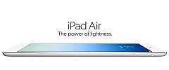

Äntligen officiell: Apples nya Ipad Air

Det blev ingen 5:a, det blev en ”Air” – en lättare, tunnare och mer späckad version av Ipad.
går kväll så avslöjades den extremt dåligt bevakade hemligheten. Apples nya generation
av surfplattor. Så vad har teknikjätten gjort? Tittar vi på deras stora 9,7-tums-platta
så är den mest iögonfallande skillnaden mellan nya Ipad Air och gamla Ipad 4, designen.
Nu ser den, precis som alla läckor och rykten gjorde gällande, ut som en stor Ipad Mini.
Tittar vi på siffrorna så är den tunnare med sina 7,5 millimeter, ramen har krympt med
43 procent jämfört med Ipad 4 och så det bästa – den har bantats rejält. Apple säger att
nya Air endast väger 478 gram, vilket är bra mycket lättare än tidigare generationens
662 gram.
170 miljoner sålda Ipads sen starten
170 miljoner sålda Ipads Apple har presenterat två nya surfplattor i form av Ipad
Air och retinabestyckade Ipad Mini. De båda modellerna är en ordentlig uppgradering
och säkert ett välkommet tillskott till marknaden när de släpps i Sverige.Under pressvisningen tidigare idag berättade Tim Cook att 170 miljoner surfplattor har sålts ur Ipad-serien
sen den första modellen introducerades av Apple. Cook passade även på att nämna att
det nu finns 450 000 Ipad-appar.
Company News 3
Android ska snabbas upp med hjälp av DroidBooster När Google introducerade Project
Butter till Android var det en rejäl förbättring på prestandafronten för hela
plattformen. För att göra det hela ännu bättre så har Google nu köpt upp företaget bakom
DroidBooster, nämligen FlexyCore.Applikationen i fråga är inte längre tillgänglig för
nedladdning, men när den fanns så hjälpte den till med att minska antalet cykler som
krävdes för processorn att exekvera javakod. Nu arbetar Google med teamet bakom
DroidBooster för att implementera tekniken i Android.